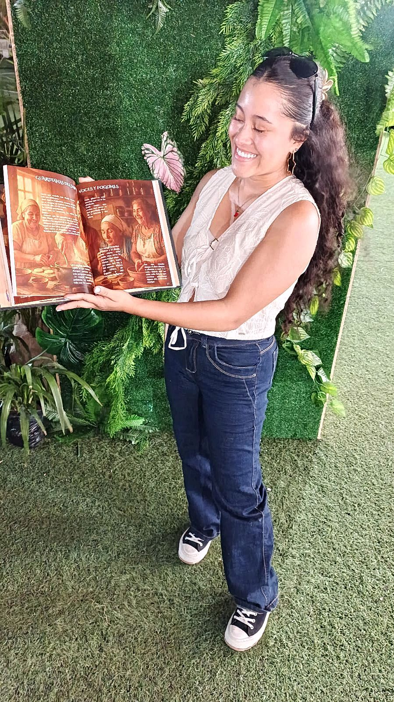
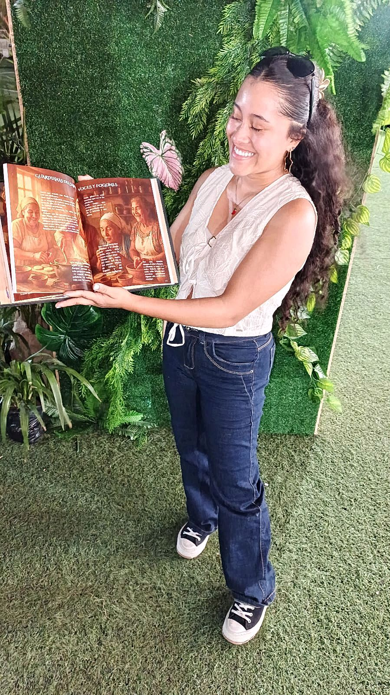

Raíces y Fogones
El alma de la cocina colombiana.
Precio: COP 30.000
Un libro que nace del fogón
Todo comenzó en una cocina tibia, donde el vapor subía lento y los aromas eran lenguaje. Ahí estaba yo, pequeña, observando a mi abuela como quien presencia un hechizo: con sus manos llenas de tiempo, revolviendo un arroz con leche que sabía a infancia.
Pero fue mi papá —el mismo que me enseñó a preparar un arroz como si fuera un acto sagrado— quien encendió en mí la chispa. Él me enseñó que la cocina no era solo alimentar, era amar con las manos.
Este viaje comienza en mi cocina, pero también en mi historia. Antes de probar mis recetas, te invito a conocer de dónde vengo, por qué cocino y cómo el fuego encendió mi alma. Bienvenid@.
Introducción (extracto)
La cocina es un puente entre el pasado y el presente, una memoria viva que se transmite de generación en generación. Es el fogón de leña donde se cocinaban los primeros sancochos, es la molienda donde el maíz se transformaba en arepas, es la olla de barro que conserva los sabores de antaño.
Desde pequeña, entendí que la cocina era mucho más que el acto de preparar alimentos. En mi familia crecí rodeada de personas que disfrutaban cocinar y que entendían que un plato bien hecho no solo alimenta el cuerpo, sino que reconforta el alma.
Este libro es un homenaje a los fogones de antaño y un llamado a seguir cocinando con el alma.
Producto premium en mercados nacionales e internacionales
Raíces y Fogones ha trascendido fronteras, consolidándose como un producto premium en el sector editorial gastronómico. Su reconocimiento en los Gourmand World Cookbook Awards —considerados los “Óscar” de los libros culinarios— ha abierto puertas en mercados internacionales, posicionándolo como una obra de referencia para estudios culturales, bibliotecas especializadas y lectores exigentes.
Distribuido en librerías de lujo, ferias del libro y tiendas gourmet de América Latina y Europa, este libro representa la excelencia editorial colombiana y es un emblema de nuestra cultura culinaria en el exterior.
Galería
 
